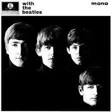
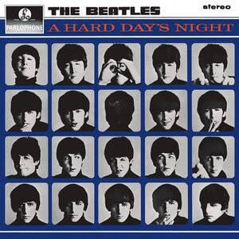
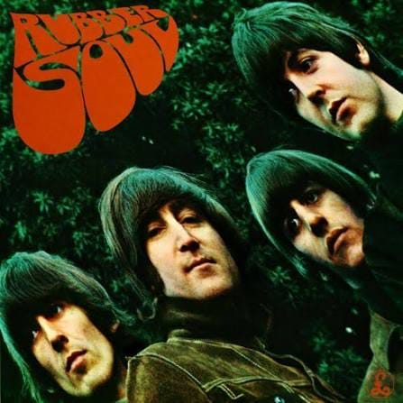
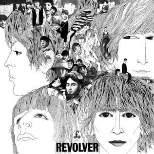
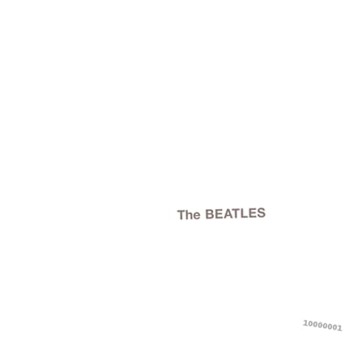
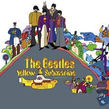
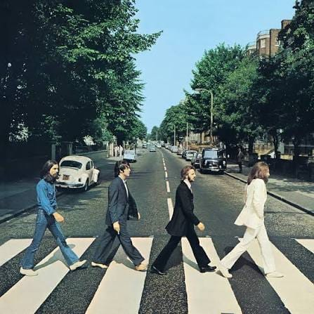

Álbuns de Estúdio
Please Please Me
14 faixas
Álbum de estreia da banda, gravado em pouco mais de dez horas de estúdio.

1963With the Beatles
14 faixas
Segundo álbum da banda, conhecido pela capa em preto e branco com os rostos parcialmente na sombra.

1964A Hard Day's Night
13 faixas
Trilha sonora do primeiro filme da banda, com todas as músicas assinadas por Lennon e McCartney.
Beatles for Sale
14 faixas
Mistura composições próprias com regravações, gravado em meio a uma agenda intensa de turnês.
Help!
14 faixas
Trilha do segundo filme da banda, traz a clássica "Yesterday".

1965Rubber Soul
14 faixas
Marca a virada da banda para sonoridades mais maduras, com influências folk.

1966Revolver
14 faixas
Álbum marcado pela experimentação em estúdio, com fitas invertidas e novos efeitos sonoros.
 1967
1967
Sgt. Pepper's Lonely Hearts Club Band
13 faixas
Álbum conceitual considerado um dos marcos do rock psicodélico.
Magical Mystery Tour
11 faixas
Trilha sonora do especial de televisão homônimo da banda.

1968The Beatles (Álbum Branco)
30 faixas · álbum duplo
Reúne uma enorme variedade de estilos musicais.

1969Yellow Submarine
13 faixas
Trilha sonora do filme de animação de mesmo nome.

1969Abbey Road
17 faixas
Penúltimo álbum gravado pela banda, famoso pela capa da faixa de pedestres em Londres.
Let It Be
12 faixas
Último álbum lançado pela banda, marcado pelo fim do grupo.
🎧 Os trechos de áudio ainda precisam ser adicionados em assets/audio/discografia/
(arquivos curtos, de até 30 segundos, com os nomes já usados no código acima).